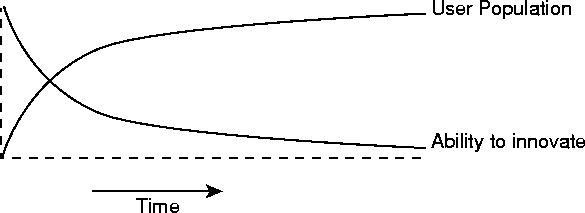

| CONTENTS | PREV | NEXT | The Java Language Environment |
Innovation on the Internet follows a pattern: initially, someone develops a technology. They're free to try all kinds of things since no one else is using the technology and there are no compatibility issues. Slowly, people start using it, and as they do, compatibility and interoperability concerns slow the pace of innovation. The Internet is now in a state where even simple changes that everyone agrees will have significant merit are very hard to make.
Within a community that uses HotJava, individuals can experiment with new facilities while at the same time preserving compatibility and interoperability. Data can be published in new formats and distributed using new protocols and the implementations of these will be automatically and safely installed. There is no upgrade problem.
One need not be inventing new things to need these facilities. Almost all organizations need to be able to adapt to changing requirements. The HotJava browser's flexibility can greatly aid that. As new protocols and data types become important, they can be transparently incorporated.